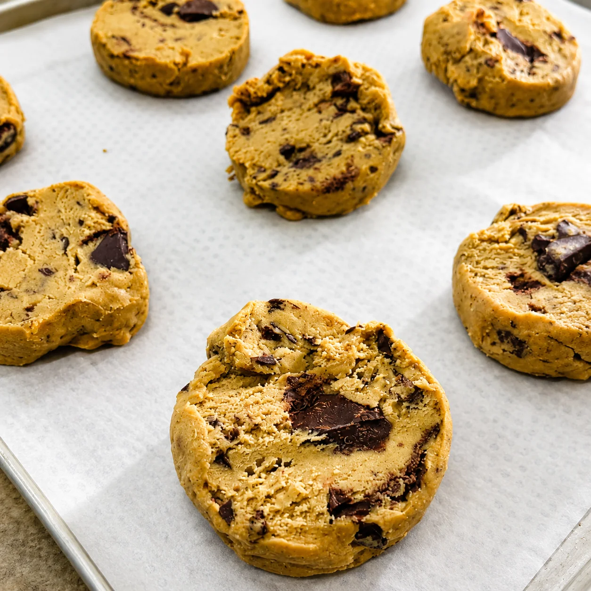

Cookie orgânico e broa de milho — produção própria.
Brownies, bolos e outros doces ficam na curadoria do Emporium, com marcas selecionadas.

Na linha própria, a Lia Toss fabrica cookie orgânico e broa de milho. O restante é curadoria do Emporium.
A Lia Toss também vende brownies, bolos, doces sem açúcar refinado e outras opções doces no Emporium. Esses produtos fazem parte da curadoria de marcas selecionadas.
Quando falamos de fabricação própria nesta categoria, estamos falando especificamente de cookie orgânico e broa de milho, feitos na cozinha da Lia Toss.
"Produção própria quando é feita aqui. Curadoria quando vem de marcas selecionadas."Lia Toss — Emporium Orgânico Certificado
Porto da Lagoa, Florianópolis. Seg a Sáb.